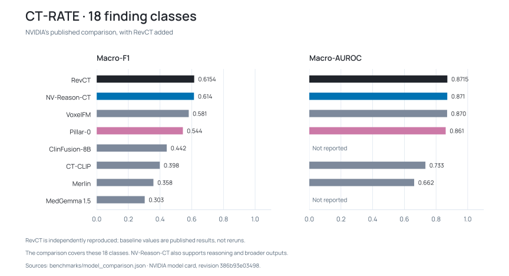
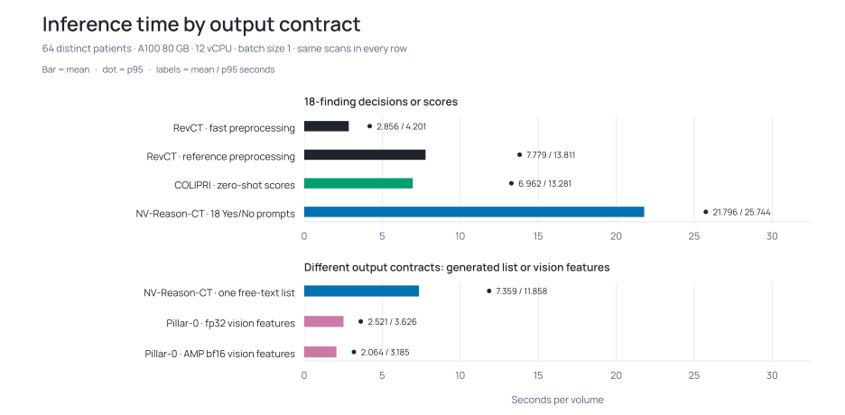
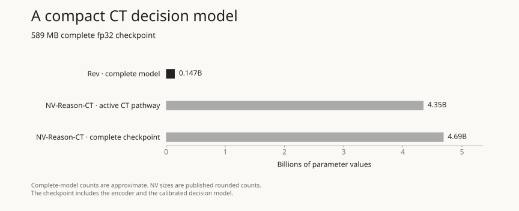

RevCT
A state-of-the-art typed decision model for computed tomography
1 Robotics Intelligence CoE, HCLTech (Santa Clara, CA).


Overview
RevCT turns a chest CT volume into 18 present/absent finding decisions and calibrated scores. A frozen COLIPRI image encoder and lightweight learned heads keep the complete checkpoint to approximately 147 million parameters and 589 MB. There is no language decoder.
The model is designed for focused classification and sifting through research scans. In the recorded comparison with NV-Reason-CT’s 18-question Yes/No protocol, fast-preprocessing RevCT averaged 2.856 seconds per scan, compared with 21.796 seconds for NV-Reason-CT: a 7.63× ratio of mean latencies. Timing scope and results.
The System 1/System 2 analogy captures the complementary roles: rapid, fixed-vocabulary decisions alongside more deliberate reasoning. Complex models like NVIDIA’s NV-Reason-CT support broader reasoning, report generation and question answering. RevCT supplies a small, focused classification model for the parts of that workflow when time is of the essence.
From a CT volume to typed decisions
HU-valued NIfTI input is oriented to RAS, resampled to 2 mm isotropic spacing, clipped and scaled, then cropped or padded to a centred 192³ volume. The frozen COLIPRI encoder projects its features before attention pooling, producing a 768-dimensional representation for the 18 learned finding heads.
Decisions and calibrated scores follow separate paths. A present/absent decision compares each raw logit with its learned decision threshold. Sigmoid followed by an isotonic mapping produces the calibrated score independently; a score of 0.5 is not necessarily the decision boundary. Decision confidence is the score when present, or one minus the score when absent.
Training fits 18 class-balanced logistic regressions. Five shuffled, volume-level folds produce out-of-fold predictions for F1 threshold selection and separate isotonic calibration; final heads are refitted on the training frame. Inference loads these learned components and returns a structured record. See the output contract for decision and confidence fields.
Classification on CT-RATE
On the corrected 3,002-volume CT-RATE validation cohort, RevCT records state-of-the-art macro-F1 performance and parity of macro-AUROC.
| Model | Macro-F1 | Macro-AUROC |
|---|---|---|
| RevCT | 0.6154 | 0.8715 |
| NV-Reason-CT (published) | 0.614 | 0.871 |

A volume every 2.856 seconds
Across 64 CT volumes, RevCT averaged 2.856 seconds per volume, with a 95th-percentile time of 4.201 seconds. On the same NVIDIA A100 80 GB and 12 vCPUs, NV-Reason-CT’s 18-question Yes/No protocol averaged 21.796 seconds.

- Included: preprocessing, transfer, inference and postprocessing, from warm local NIfTI input to CPU-visible output.
- Excluded: downloads, model loading and initial inference. RevCT used fp32, with TF32 disabled.
Model size and checkpoint context
RevCT’s approximately 147M parameters and 589 MB checkpoint include its frozen image encoder and calibrated heads. It needs no second encoder-weight download or remote Python code.


NVIDIA’s model card lists 4.69B total parameters and a 4.35B active pathway; Hugging Face metadata reports 5,322M.
Try RevCT
Use Python 3.11+ and a GPU-compatible PyTorch installation. The release pins Transformers 5.6.2 and COLIPRI 0.1.3.
git clone https://github.com/hcltech-robotics/rev-ct.git
cd rev-ct
git checkout v0.3.2
python -m pip install '.[inference]'
hf auth login
rev-ct predict chest.nii.gz --preprocessing fast --output decisions.jsonlSupply HU-valued NIfTI volumes with correct physical geometry; convert DICOM first. Reference preprocessing remains the default. The explicit fast path matched every voxel on 64 tested scans and falls back for unsupported geometry.
Use and Limitations
RevCT has not been clinically validated and is not intended for diagnosis or treatment. Its fixed vocabulary cannot establish a complete normal examination. It does not localise findings, and mean-score burden is not a validated severity measure. Calibration must be checked when acquisition methods or populations change.
Code and learned heads are Apache-2.0; the bundled COLIPRI encoder retains its MIT licence. CT-RATE has separate dataset terms. See the notice and model card.
How to cite
Chris von Csefalvay and Tamas Foldi. RevCT: A typed decision model for computed tomography (CT). Software release v0.3.2, 2026. DOI: 10.57967/hf/10861.
@software{voncsefalvay2026revct,
author = {von Csefalvay, Chris and Foldi, Tamas},
title = {RevCT: A typed decision model for computed tomography (CT)},
year = {2026},
version = {0.3.2},
doi = {10.57967/hf/10861},
url = {https://github.com/hcltech-robotics/rev-ct}
}